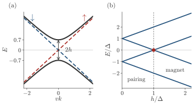
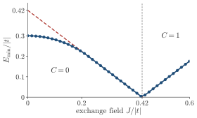

Page 14 of 16 of this session
5.18 Engineering a topological superconductor from a quantum spin Hall insulator
Chiral and p-wave superconductors of the kind we need are rare in nature, so in practice they are usually engineered and not found. Can we build the Kitaev chain out of parts that exist? We will now see that the edge of a quantum spin Hall insulator, two magnets and an ordinary s-wave superconductor are enough. The Majorana zero modes then sit at the two ends of the segment of edge between the magnets.
\[H_{\text{Kitaev}} = -t\sum_n \left(c_n^\dagger c_{n+1} + \text{h.c.}\right) - \mu\sum_n c_n^\dagger c_n + \Delta\sum_n \left(c_n c_{n+1} + c_{n+1}^\dagger c_n^\dagger\right). \tag{5.19}\]
This is the Kitaev chain of Section 5.16, a chain of spinless fermions with the hopping \(t\), the chemical potential \(\mu\) and a pairing \(\Delta\) between neighboring sites. In its topological phase it has one Majorana zero mode at each end. What it needs is a wire with a single channel in each direction of motion.
One instructive recipe uses directly the quantum spin Hall (QSH) insulator of Section 3.11. We take a QSH insulator, for concreteness tungsten ditelluride (WTe\(_2\)). Its edge has helical modes, meaning that spin-up electrons propagate in one direction and spin-down electrons propagate in the other direction on the same edge. Now we place ordinary ferromagnets on two segments of this edge. A magnet whose magnetization has a component perpendicular to the spin axis of the edge breaks time-reversal symmetry locally, and this opens a gap in the helical edge modes below it. We recall from Section 3.11b that the protection of the QSH edge relies on time-reversal symmetry through Kramers degeneracy, so if we break this symmetry locally, the protection is lost there. What remains without a gap is a short isolated segment of helical edge between the two magnetic regions.
This isolated segment only has spin-up electrons moving right and spin-down electrons moving left, with no spin-down electrons moving right and no spin-up electrons moving left. If we count states only by their direction of propagation, this segment is effectively spinless, which is the ingredient that the Kitaev-chain construction of Section 5.16 needs. If we then couple this segment by proximity to an ordinary s-wave superconductor, we reproduce on it the physics of (5.19). This is a one-dimensional p-wave superconductor, with Majorana zero modes pinned at the two ends of the isolated segment. Figure 5.6 shows the whole setup.

Why do the Majoranas sit at the ends of the segment, and not somewhere else? Let us write the edge in the Nambu basis (5.6), with the velocity \(v\) of the edge, an exchange field \(h\) along \(x\) from the magnet and an \(s\)-wave pairing \(\Delta\) from the superconductor,
\[H(k)=\tau_z\left(vk\,\sigma_z-\mu\right)+h\,\sigma_x+\Delta\,\tau_x ,\]
where \(\sigma\) acts on the spin and \(\tau\) on the electron and the hole. The kinetic term and \(\mu\) change sign in the hole block, while the exchange field keeps its sign. The simplest case is \(k=0\) and \(\mu=0\), where only the two terms that open a gap are left.
At \(k=0\) and \(\mu=0\) the four BdG levels of this edge are
\[E(k=0)=\pm h\pm\Delta .\]
The gap closes at \(h=\Delta\). So a part of the edge where pairing wins, \(h<\Delta\), and a part where the magnet wins, \(h>\Delta\), are two different phases, and a Majorana zero mode sits at the boundary between them.
The steps The levels of the helical edge at k=0
At \(k=0\) and \(\mu=0\) the edge Hamiltonian is \(H=h\,\sigma_x+\Delta\,\tau_x\). Let us take each term alone first. With \(\Delta=0\) the magnet gives \(h\sigma_x\), whose eigenvalues are \(\pm h\), once for the electron and once for the hole. With \(h=0\) the pairing gives \(\Delta\tau_x\), with the eigenvalues \(\pm\Delta\), once for each spin.
The two terms act on different indices, so they commute, \([\sigma_x,\tau_x]=0\), and they have common eigenvectors. On such a vector \(\sigma_x=s\) and \(\tau_x=s'\), with \(s,s'=\pm1\), and the energy is the sum
\[E=s\,h+s'\Delta ,\]
which gives the four levels \(\pm h\pm\Delta\). The level \(h-\Delta\) crosses zero at \(h=\Delta\), together with its partner \(\Delta-h\), so the gap closes there. The two energies add, and they do not add in quadrature as \(\varepsilon\) and \(\Delta\) do in (5.9). The reason for this is that \(\varepsilon\tau_z\) and \(\Delta\tau_x\) anticommute, while \(h\sigma_x\) and \(\Delta\tau_x\) commute.

The notebook builds the same competition in two dimensions, with a triangular lattice, a Rashba spin-orbit coupling, an exchange field \(J\) along \(z\) and an \(s\)-wave pairing \(\Delta\). At \(\Gamma\) the spin-orbit coupling vanishes, and the four levels are \(\pm J\pm\sqrt{\varepsilon_\Gamma^2+\Delta^2}\), with \(\varepsilon_\Gamma\) the band energy at \(\Gamma\). This has the form of the levels of the edge at \(k=0\), with \(\sqrt{\varepsilon_\Gamma^2+\Delta^2}\) in place of \(\Delta\). So the gap closes at \(J=\sqrt{\varepsilon_\Gamma^2+\Delta^2}\), and Schematic 5.19 shows that the Chern number of the BdG bands changes there.

g6_artificial_tsc.py
h.add_onsite(-5.7) puts the band energy at \(\Gamma\) at \(\varepsilon_\Gamma=0.3\) above the Fermi level, which is the top of the band before the Rashba coupling is added. The Rashba coupling is h.add_rashba(1.0), the exchange field h.add_zeeman([0,0,J]) and the pairing h.add_swave(0.3). With the Rashba coupling, \(\Gamma\) is the crossing point of the two Rashba bands, and the Fermi level cuts them on two closed lines around \(\Gamma\), one of them very close to \(\Gamma\). The dots are the smallest quasiparticle energy \(E_\mathrm{min}\) on the line \(M\), \(\Gamma\), \(M\), which is also the smallest one over the whole zone, and the dashed line is the level at \(\Gamma\), \(|J-0.42|\). At \(J=0\) the smallest energy is \(\Delta=0.3\), on the Fermi surface, and from about \(J=0.22\) on it is the level at \(\Gamma\). This level goes to zero at \(J=\sqrt{0.3^2+0.3^2}=0.42\), where the Chern number of the BdG bands below zero changes from \(0\), computed at \(J=0.3\), to \(1\), computed at \(J=0.6\). Look at the dip, since the two sides of it are two different phases.The helical edge of the recipe exists in monolayer WTe\(_2\). Its quantum spin Hall state is seen in transport at temperatures up to \(100\) K, as reported in this article. In another experiment, reported in this article, atomically thin layers of WTe\(_2\) are placed on the van der Waals superconductor NbSe\(_2\). There STM shows that at the edge of the monolayer the superconducting gap coexists with the spectroscopic signature of the quantum spin Hall edge state. The \(100\) K belongs to the quantum spin Hall state of the first article, measured on another sample, and not to the proximity gap.
The segment of helical edge between the two magnets is called effectively spinless. Why?
Show the answers
- A. ✗ False
This is false. A magnet breaks time-reversal symmetry, and its component perpendicular to the spin axis of the edge opens a gap below it. The electrons in the segment between the magnets still have spin, since spin-up moves right and spin-down moves left.
- B. ✓ True
This is true. On a helical edge spin-up moves in one direction and spin-down in the other. Each direction has one channel, as in the spinless chain that (5.19) needs.
\[H_{\text{Kitaev}} = -t\sum_n \left(c_n^\dagger c_{n+1} + \text{h.c.}\right) - \mu\sum_n c_n^\dagger c_n + \Delta\sum_n \left(c_n c_{n+1} + c_{n+1}^\dagger c_n^\dagger\right). \tag{5.19}\]
- C. ✗ False
This is false. That is an ordinary spinful wire with two channels in each direction. Pairing it with an \(s\)-wave superconductor gives a trivial gap and no Majoranas, so it is not the helical edge.
At \(k=0\) and \(\mu=0\) the helical edge with a magnet and a pairing has
\[H=h\,\sigma_x+\Delta\,\tau_x .\]
Here \(\sigma\) acts on the spin and \(\tau\) on the electron and the hole. What are its levels?
Show the answers
- A. ✓ True
This is true. \(\sigma_x\) and \(\tau_x\) act on different indices, so they commute and have common eigenvectors, and their eigenvalues add. For \(h=0.3\) and \(\Delta=0.5\) the levels are \(\pm0.2\) and \(\pm0.8\).
- B. ✗ False
This is false. For \(h=0.3\) and \(\Delta=0.5\) this gives \(\pm0.58\), while the matrix has the levels \(\pm0.2\) and \(\pm0.8\). A square root appears for two terms that anticommute, as \(\varepsilon\tau_z\) and \(\Delta\tau_x\) do in the BdG spectrum \(E=\pm\sqrt{\varepsilon^2+|\Delta|^2}\).
- C. ✗ False
This is false. These are only two of the four levels. For \(h=0.3\) and \(\Delta=0.5\) the matrix also has \(\pm0.2\), which is \(\pm(h-\Delta)\), and this pair crosses zero at \(h=\Delta\).
A helical edge with the velocity \(v=1\) and \(\mu=0.2\) has the BdG Hamiltonian
\[H(k)=\tau_z\left(vk\,\sigma_z-\mu\right)+h\,\sigma_x+\Delta\,\tau_x .\]
Each picture shows its levels against \(k\). One has \(h=\Delta=0\), one has only \(h=0.5\), and one has only \(\Delta=0.3\). Which picture has the gap of the magnet?
Show the answers
- A. ✗ False
This is false. With \(h=\Delta=0\) nothing couples the branches. The lines cross zero at \(k=\pm\mu/v=\pm0.2\), so this edge has no gap.
- B. ✓ True
This is true. The magnet couples the two directions of motion where they cross, at \(k=0\). The electron levels are \(-\mu\pm\sqrt{v^2k^2+h^2}\) and the hole levels \(\mu\pm\sqrt{v^2k^2+h^2}\), so the smallest energy is \(h-\mu=0.3\), at \(k=0\).
- C. ✗ False
This is false. Pairing couples an electron and a hole where they cross zero, at the Fermi momenta \(k=\pm0.2\). The smallest energy is \(\Delta=0.3\) there, and at \(k=0\) the levels are \(\pm\sqrt{\mu^2+\Delta^2}=\pm0.36\).
The edge has \(\Delta=0.3\) and \(\mu=0.4\). Show that its levels at \(k=0\) are \(\pm h\pm\sqrt{\Delta^2+\mu^2}\), and find the exchange field \(h\) where the gap closes.
Solution
At \(k=0\) the edge Hamiltonian is \(H=-\mu\,\tau_z+\Delta\,\tau_x+h\,\sigma_x\). The first two terms act only on \(\tau\), and \(\tau_z\) and \(\tau_x\) anticommute, so
\[\left(-\mu\,\tau_z+\Delta\,\tau_x\right)^2=\mu^2+\Delta^2 ,\]
and their eigenvalues are \(\pm\sqrt{\mu^2+\Delta^2}=\pm0.5\), as for \(\varepsilon\) and \(\Delta\) in (5.9). The last term acts only on \(\sigma\) and commutes with both, so the energies add, as in the steps of the levels at \(k=0\) above,
\[E(k=0)=\pm h\pm\sqrt{\Delta^2+\mu^2} .\]
The level \(h-\sqrt{\Delta^2+\mu^2}\) crosses zero at \(h=\sqrt{0.09+0.16}=0.5\). A scan over all \(k\) gives the same answer, since the smallest energy of the edge vanishes only at \(h=0.5\). So the chemical potential enters the condition, as it does in the window (5.22) of the Kitaev chain. A gate that moves the Fermi level of the edge then moves the boundary between the two phases.
Notebook check-in: session5.ipynb, “Artificial topological superconductivity” (Challenge), “Edge states of an artificial topological superconductor” (Challenge), and “Topological phase transition as a function of the exchange field”
Build the two-dimensional analog of this construction, a triangular lattice with Rashba coupling, an exchange field and s-wave pairing. The first cell computes the Chern number of the BdG bands, and the second one the chiral edge states of a ribbon. These two cells use opposite signs of the exchange field, and a change of this sign reverses both the Chern number and the direction of the edge states. The last cell follows how the gap closes and opens again as the field grows.
Try it. In the cell, the loop runs over J from 0 to 0.6 with add_swave(0.3). Follow the lowest energy near \(\mathbf k=0\). It starts at \(|\Delta|=0.3\), closes close to J=0.42 and opens again. Above this value the state is the artificial topological superconductor.
- In Section 5.19 the Majorana zero modes at the two ends of such a segment are the building blocks of a topological qubit.
- In Section 6.3 we see where the exchange field of a magnet comes from, as the mean-field magnetization of the Hubbard model.
- In Section 9.8 a vacancy tells a topological superconductor apart from a trivial one, when the two bulk spectra look the same.